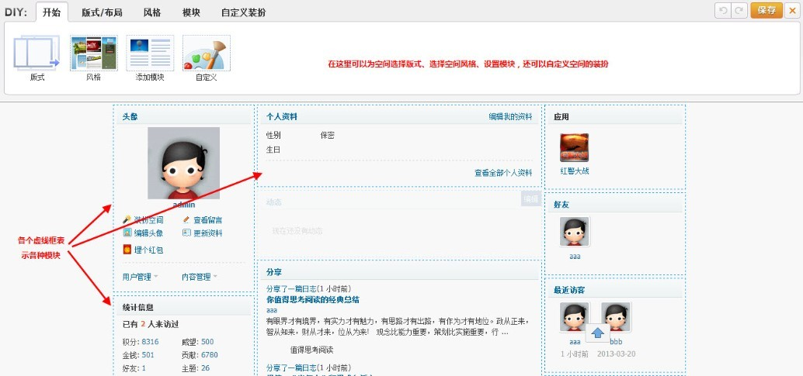
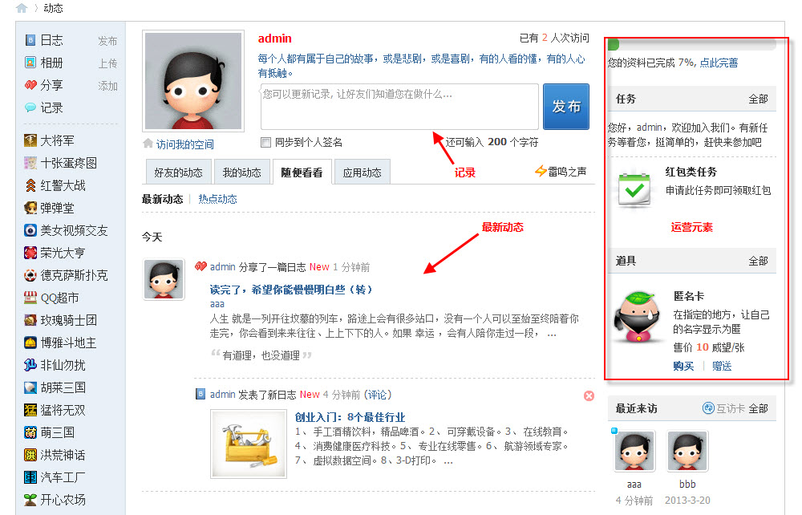

家园
家园完全实现了SNS的功能。在家园中，用户通过好友、感兴趣的话题等多种因素进行网络社交拓展，并形成放射性网络。作为社交网络的每个节点，用户采用多种形式不断扩充丰富的数据，包括发表日志，上传相册、图片，发布记录等，使个人空间呈现多样化、个性化，从而使整个社交网络关系多元化、元素多样化、内容丰富化。
个人空间类似于QQ空间，用户可以在此发表日志、上传图片、发布记录等，空间首页展示的内容可以让用户了解自己的最近动态，心情，查看留言、了解最近访客，了解好友情况等。同时空间首页的“装扮空间“，可以让用户通过强大的DIY功能轻松的把个人空间装扮的如同Qzone一样更加耀眼、更加绚丽和与众不同，让别人访问到会员个人空间时印象深刻。
好友动态页面核心元素是展示好友动态以及发表记录，同时，页面左侧提供了家园的功能导航，右侧提供了任务、道具等运营元素的展示。如下图：
下面我们来详细介绍各元素：
好友动态：在此显示好友所有动态，例如发表了日志、上传了照片等，用户可以从此处了解好友的最新动向，第一时间参与到评论或回复中来；显示我的动态方便用户回顾自己近期的动作；随便看看则提供了好友外用户的最新动态以及热点动态，方便用户寻找到其他志同道合的好友，并且不让用户错过每条热点话题
发布记录：类似于QQ说说，让好友们知道您在做什么或是有什么样的心情，只需在输入框中输入，发布即可，同时还可以同步到个人签名。
运营元素：在页面右侧展示的运营元素，可以看到系统开启的任务以及道具，用户可以链接到相应的页面领取任务或是购买道具，增强用户活跃度。
导航：导航中包含了日志、相册、分享、记录以及站长添加的其他应用，方便用户链接到相应页面。